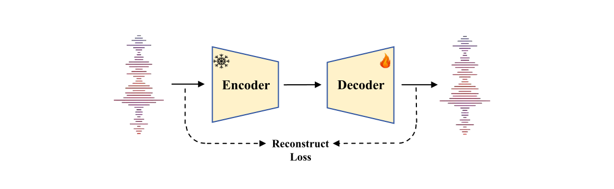
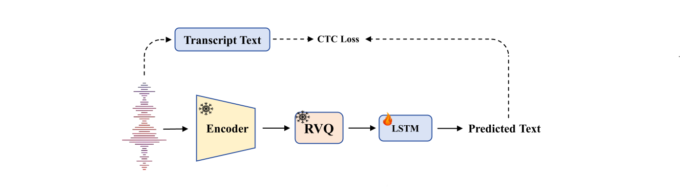

Illustration of XY-Tokenizer. The upper half depicts the pre-training stage, aligning XY-Tokenizer with text while preserving coarse acoustic features, forming an X-shaped architecture. The lower half illustrates the post-training stage, modeling finer-grained acoustic features, forming a Y-shaped architecture.
Overview
Speech codecs serve as bridges between speech signals and large language models. An ideal codec for speech language models should not only preserve acoustic information but also capture rich semantic information. However, existing speech codecs struggle to balance high-quality audio reconstruction with ease of modeling by language models. In this study, we analyze the limitations of previous codecs in balancing semantic richness and acoustic fidelity. We propose XY-Tokenizer, a novel codec that mitigates the conflict between semantic and acoustic capabilities through multi-stage, multi-task learning. Experimental results demonstrate that XY-Tokenizer achieves performance in both semantic and acoustic tasks comparable to that of state-of-the-art codecs operating at similar bitrates, even though those existing codecs typically excel in only one aspect. Specifically, XY-Tokenizer achieves strong text alignment, surpassing distillation-based semantic modeling methods such as SpeechTokenizer and Mimi, while maintaining a speaker similarity score of 0.83 between reconstructed and original audio. The reconstruction performance of XY-Tokenizer is comparable to that of BigCodec, the current state-of-the-art among acoustic-only codecs, which achieves a speaker similarity score of 0.84 at a similar bitrate.
Preliminary Experiments

In preliminary experiments, we trained an autoencoder using fixed encoders (Whisper, HuBERT, WavLM) with reconstruction loss only. Only the decoders were trainable during this experiment.
Model
SIM (↑)
STOI (↑)
PESQ-NB (↑)
PESQ-WB (↑)
HuBERT
0.42
0.80
1.46
1.20
WavLM
0.53
0.83
1.53
1.26
Whisper
0.68
0.88
2.03
1.65
Comparison between pretrained ASR/SSL models in reconstructed audio quality; bold indicates best performance. Based on ASR task pretraining, Whisper retains more acoustic information than HuBERT and WavLM trained with MLM (Mask Language Model).
GroundTruth
HuBERT
Wavlm
Whisper
Reconstructed audio samples from preliminary experiments using different pretrained models as fixed encoders. During training, only the decoder was optimized using reconstruction loss. Discriminator was not used, resulting in some metallic artifacts in the reconstructed audio. Listening carefully to these samples reveals that Whisper preserves most acoustic information, while HuBERT and WavLM lose significant acoustic details including speaker timbre and fine-grained acoustic characteristics.
Before designing our XY-Tokenizer, we first conducted a preliminary experiment to evaluate the performance of different pretrained models which contain rich semantic information in preserving acoustic information. We selected three pre-trained models: Whisper, an ASR model, as well as HuBERT and WavLM, which are self-supervised learning (SSL) models. We trained an auto-encoder (as shown in Figure X) to assess the reconstruction capabilities of these pre-trained models. Specifically, we used the pre-trained Whisper, HuBERT, and WavLM models as fixed encoders, each paired with a decoder of identical parameter size to ensure a fair comparison. As shown in Table X and reconstructed audios in Demo X, Whisper achieves superior reconstruction performance, effectively preserving paralinguistic information, such as speaker timbre and acoustic details. In contrast, HuBERT and WavLM exhibit limitations in retaining certain aspects of speaker timbre and fine-grained acoustic details. Furthermore, Whisper's pretraining on ASR tasks aligns closely with the LLM-based tasks employed in our codec, facilitating better text-speech alignment. Based on these findings, we selected Whisper to initialize the encoder of our proposed XY-Tokenizer and further fine-tuned it for our codec training pipeline.
Method
In our empirical study, we found that training a low-bitrate speech codec from scratch is challenging, especially for VQ-GAN based speech codecs.
To address this challenge, we designed a multi-stage, multi-task learning framework consisting of pre-training and post-training stages. In the pre-training stage, we employ multi-task learning to simultaneously model semantic features and coarse acoustic features. In the post-training stage, we focus on modeling fine-grained acoustic features. This section elaborates on these stages in detail.
Reconstructed audio samples after pre-training stage and post-training stage are shown in Demo X.
GroundTruth
After Pre-training Stage
After Post-training Stage
Reconstructed audio samples of XY-Tokenizer after pre-training and post-training stage. The reconstructed audio samples after the pre-training stage exhibit metallic artifacts, which are eliminated after the post-training stage.
Pre-training Stage
Pre-training stage of XY-Tokenizer. It utilizes a 2-channel encoder-decoder structure, forming an X-shaped architecture.
In the pre-training stage (as shown in Figure X), we focus on two tasks: audio reconstruction and automatic speech recognition (ASR). All model parameters are trainable, except for the weights of the semantic encoder, which is initialized from Whisper encoder, and the large language model (LLM), which is initialized from Qwen2.5.
During this stage, we employ three loss functions: mel-spectrogram reconstruction loss, ASR loss (cross-entropy of the LLM with quantized features as condition), and commitment loss for the quantizer. We do not incorporate a discriminator in the pre-training stage, which helps maintain training stability while focusing on semantic alignment and basic acoustic feature preservation.
After the pre-training stage, XY-Tokenizer achieves strong text alignment while preserving most of the acoustic features, such as speaker timbre and coarse acoustic characteristics.
Post-training Stage
Post-training stage of XY-Tokenizer. The decoder discards the LLM module used for text-alignment and it forms a Y-shaped architecture.
In the post-training stage (as shown in Figure X), we focus on modeling fine-grained acoustic features to improve audio quality. Building upon the model from the pre-training stage, we incorporate discriminators to enhance the perceptual quality of the reconstructed audio. We freeze the encoder and quantizer, discard the semantic decoder, and keep only the decoder and discriminators trainable. Specifically, we employ a combination of mel-spectrogram reconstruction loss and GAN loss (consisting of adversarial loss, discriminator loss, and feature matching loss). This stage significantly improves the naturalness and fidelity of the reconstructed speech while maintaining the semantic alignment achieved in the pre-training stage.
Speech Codec Comparison
Model
BPS
Frame Rate
Semantic
Acoustic
Model Semantic
WER ↓
SIM ↑
STOI ↑
PESQ-NB ↑
PESQ-WB ↑
DAC-8
6k
75
No
0.74
0.88
0.95
3.79
3.46
SpeechTokenizer
4k
50
Yes
0.20
0.84
0.92
3.05
2.60
Mimi-32
4.4k
12.5
Yes
0.28
0.93
0.96
3.79
3.42
DAC-2
1.5k
75
No
0.98
0.49
0.83
1.91
1.51
BigCodec
1.04k
80
No
0.49
0.84
0.93
3.26
2.68
SpeechTokenizer-x1
1.5k
50
Yes
0.34
0.65
0.88
2.58
2.10
SpeechTokenizer-x2
1.5k
50
Yes
0.22
0.60
0.86
2.35
1.87
SpeechTokenizer-x3
1.5k
50
Yes
0.18
0.48
0.83
1.95
1.53
Mimi-8
1.1k
12.5
Yes
0.28
0.73
0.90
2.79
2.24
Baichuan
1.075k
12.5
Yes
0.10
0.70
0.88
2.45
1.93
XCodec2.0
0.8k
50
Yes
0.30
0.82
0.91
3.03
2.43
XY-Tokenizer(ours)
1k
12.5
Yes
0.13
0.83
0.91
3.00
2.41
Comparisons between different codecs in terms of semantic and acoustic performance. WER refers to the word error rate measured on the ASR probing task Lower WER indicates better alignment with the original text content. For codecs with >2k bps, bold values indicate SOTA performance; for low bitrate (∼1k bps) codecs, bold indicates the top 2 performing models. Baichuan refers to Baichuan Audio Tokenizer. XY-Tokenizer is the best unified codec in terms of performance in both semantic and acoustic metrics among codecs with 1kbps.

The architecture of ASR probing task. During fine-tuning, the encoder and quantizer of codec are fixed.
Reconstruct Evaluation
To evaluate the preservation of acoustic information, we employ several metrics. Speaker similarity (SIM) is calculated as the cosine similarity between speaker embeddings. We also use short-time objective intelligibility (STOI) to measure speech intelligibility and perceptual evaluation of speech quality (PESQ) to assess audio quality. All evaluations were conducted on the LibriSpeech test-clean subset.
Metrics of reconstruct evaluation are shown in Table X. Reconstruct speech and audios are available in Demo X.
Semantic Evaluation
To evaluate the semantic alignment between the codec and text, we employ an automatic speech recognition (ASR) probing task, adapted from the SUPERB framework, to assess the semantic quality of tokenized representations (as shown in Figure X). We trained a downstream ASR model using quantized embeddings, with the pretrained codec fixed. These quantized embeddings are upsampled to a minimum frame rate of 50 Hz via replication before being fed into a downstream model. The downstream model comprises a two-layer bidirectional LSTM optimized with CTC loss for character-level prediction. All models are trained on the LibriSpeech train-clean-100 subset and evaluated on the LibriSpeech dev-clean subset, using word error rate (WER) as the metric for semantic performance, where a lower WER indicates better semantic alignment.
Speech-1
Speech-2
Speech-3
Speech-4
Sound-1
Sound-2
Ground-Truth
DAC-8
SpeechTokenizer
Mimi-32
DAC-2
BigCodec
SpeechTokenizer-x1
SpeechTokenizer-x2
SpeechTokenizer-x3
Mimi-8
Baichuan
XCodec2.0
XY-Tokenizer (ours)
Reconstructed audio samples of various speech codecs. At approximately 1 kbps, XY-Tokenizer outperforms other codecs, achieving the highest naturalness and similarity to the original audio. Although trained solely on speech data from the Emilia dataset, XY-Tokenizer also demonstrates effective capability in reconstructing non-speech sounds.